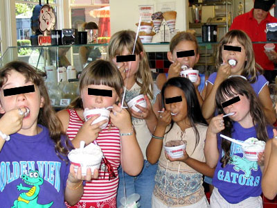
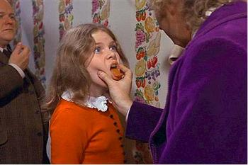
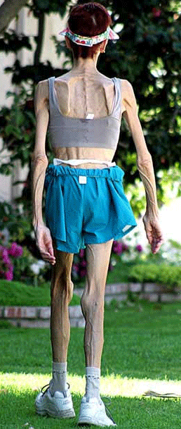
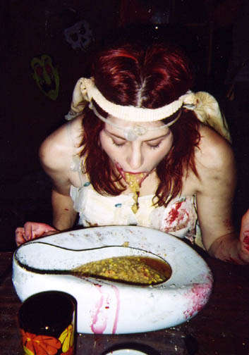
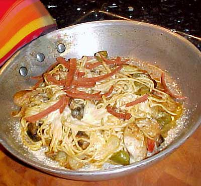
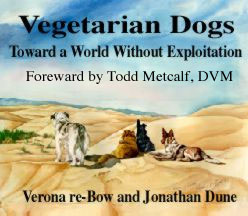
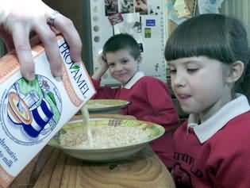

|
 Eating DisordersAre you constantly thinking about food? Are people concerned that you might be getting too skinny? Is there an ever-decreasing "magic number" in your head which represents your ideal weight, however unrealistic? No matter how many pounds are lost or gained, individuals with body dysmorphic disorders see in their mirrors only fat, depressing failures. As a public service, the Rotten Library is proud to manufacture three fictional, non-celebrity composite characters who can help shed some light on the mysterious inner workings of eating disorders. Please welcome Anna Rexia, Betty Bulimic, and Veronica Vegan. Anna RexiaEating disorder sufferers are psychologically blocked from being comfortable inside their own bodies. Anna, age 12, is neither self-absorbed, nor vain, nor easily influenced by glossy magazine covers. She simply started a diet, enjoyed the feeling of control, and then refused to give it up. Anorexia Nervosa, taken from the Greek word orexe (appetite) is characterized by an ever-decreasing willingness to eat. The causes are a convoluted hybrid of cultural, social, familial, psychological, and biological problems -- none of which can easily be solved without extended therapy or counseling. The vast majority of sufferers are female, and most have at least one emotionally absent parent. In Canada, one out every four girls has some level of eating disorder -- in the United States, it's estimated to be one in three. As the obesity epidemic expands to include nearly every age group, emotional eating arrives just in time to fill the void. According to researchers at the Ramuda Ranch Treatment Center, eating produces a physiological sense of safety, reducing the agitations most commonly associated with anger, distress or anxiety. Blood sugar levels are reduced after a delicious meal, restoring feelings of pleasure and temporarily displacing depression. Anna's pleasure centers, meanwhile, are only tickled by those items from which she's abstained. Her fear of becoming fat grows more irrational with each progressive diet plan. She obsessively counts calories, and dresses in thick, layered garments to hide her weight loss from prying eyes. No matter how emaciated she may appear to others, she's always going to feel more than a little chubby. In response to the extreme chill brought on by drastically reduced fat content, an anorexic's body will kick into overdrive to keep itself warm. Patients often develop lanugo, soft patches of downy peach-fuzz hair on the face, back and arms. Dry, yellow skin is another hallmark of the disease, as well as brittle hair and nails. Twelve year old Elisha Lay of Mildura South Primary School in Australia developed borderline anorexia after her school instituted a weigh-in policy. "After you had your weight taken, all the kids were pressuring you to tell how much you weighed. I felt like people were looking at me like I was a big girl." She stopped eating foods like yogurt and ice cream, and then extended her denial to include glasses of water, which can make anorexics feel bloated. Frances Sanders, chief executive of the Eating Disorders Foundation of Victoria, Canada suggests that weighing in shouldn't be part of any school program: "We've had cases of seven-year-olds being weighed in front of the class, and other children laughing and saying you're fat." -- but sometimes all you can do is laugh. In 2003, rail-thin BBC comedy writer Debbie Barham died of an anorexia-related heart attack at the age of 26. Many of her gags poked fun at sufferers of the disease: "While it might be traditional to have things on sticks at parties, I don't think that's actually meant to be the guests. And anything with fashionable asymmetric shoulders or short sleeves is a definite no-no. Would you like to get rid of those half-gnawed chicken drumsticks dear? Oh, I'm sorry -- they're your upper arms. Cheers." And it's not just for the ladies anymore -- manorexia claims its share of victims every year, with five to fourteen percent of American men deliberately vomiting after every meal. While male actors rarely face scrutiny unless they get fat, Hollywood actresses are regularly criticized for having dangerously unhealthy bodies which set unrealistic goals for young girls. What do Lindsay Lohan, Lara Flynn Boyle, Gwyneth Paltrow, Calista Flockhart, Mary-Kate Olsen, Tracey Gold, Paula Abdul, Justine Bateman, Whitney Houston and Ashlee Simpson all have in common? They're hideous, untalented hags who could each do with a bit of slimming. Say what you want about women suffering from body dysmorphic disorders -- they've more than demonstrated that anorexia can be ano-sexy-a! Unfortunately, it's the most common eating disorder and therefore the least interesting.
Betty BulimicSwiveling our camera 180 degrees across the crowded avenue, we're ready to zoom in on Betty Bulimic, sitting all by her lonesome near La Petite Boulangerie, a modest afternoon snackery where the world's sweetest daydreams are manufactured one almond croissant at a time. Betty loves to eat! Each and every meal comes with a frosty vanilla ice cream shake, a Thanksgiving turkey with all the trimmings, heaping piles of mashed potatoes slathered in fresh country chocolate and a sensible portion of pumpkin cookie-dough ice cream pie for dessert, stuffed with deep-dish meat lovers' pepperoni pizza, thai-wrapped in a triple-thick blueberry gingerbread pancake, garnished with powdered confectioner's sugar, crisscrossed with hearty links of apple-smoked Jimmy Dean sausage and served with a paper cone stacked high with Canadian bacon drizzled in maple syrup. And hey, what's that in her purse? Why it's a big ol' folded-up cloth napkin dripping with beer-battered waffle cut potato wedges and a six pack of emergency corn dogs for later, during her alone time. Oh, Betty Bulimic! You're prepared for any contingency! Dunk me in gold glitter, deep-fry me like a donut and marry me you gorgeous dame.Bulimia Nervosa is a psychological condition, a syndrome first characterized in the early 1980s by a fierce preoccupation with control over one's body weight. The word bulimia is derived from the Greek words bous (ox or bull) and limos (hunger). Nervosa, meanwhile, comes from the French term for psychological unrest, nerveux. Put 'em together and our girl Betty has, quite literally, the appetite of a big fat freaked-out cow. She also has an ongoing preoccupation with binging -- dreamlike, episodic trance states in which large amounts of food are consumed in very short periods of time. Usually the binging takes place in secret: in front of a TiVo'd episode of America's Next Top Model, under the quilted naptime comforter with several pints of Ben & Jerry's Marsha Marsha Marshmallow -- or right there in the parking lot immediately following several trips around the Wendy's drive thru. The foods she devours are almost without exception the "forbidden foods" which nutritionists have universally condemned as fattening. The binging continues without interruption, sometimes for hours, until the urge to eat has finally passed or the stomach walls are so completely full and stretched out that our poor Betty feels jabbing, physical pain throughout her entire abdomen. When bulimia occurs in a diabetic, they may choose to neglect their insulin treatment because too much sugar really adds up. Ironically, the boxes of Popcorn Chicken from KFC, the buttermilk biscuits from Popeye's, and all those mint Double-Stuf™ Oreo cookies are all devoured without enjoyment. Sometimes she can't even taste them at all -- like rape, it's not about sex, just power. Bulimic binge eating is accompanied by severe anxiety and inexorable guilt. As regular as clockwork, the binging "trance" is over as quickly as it begins. What follows are feelings of dread, self-hatred, and inevitable remorse. Because Betty's superfluous overeating has taken place so suddenly -- and on such a massive scale -- she must immediately select Undo from the Fat menu right now, employing the very same secret techniques used by fifteen-year-old high school students around the world. Forced vomiting (purging) is the stimulation of your throat's natural gag reflexes, and it's absolutely guaranteed to diminish the fattening effects of any and all ingested foodstuffs. Common household utensils like wooden spoons, toothbrushes, vibrators and rubbery cutlery handles are all equally viable, but really anything large and mouth-sized can be used to trigger the appropriate sensations. Tie back your ponytail. Brace yourself against the toilet with one arm. Have a towel nearby, and maybe a glass of water. Not too much water, butterball! Insert the tool of your choice into your mouth. Instinctively, your throat will seize up, constricting or clamping shut to prevent the acceptance of a foreign object. It's imperative that you start slowly, easing the object over and behind your tongue, then up against the rear of your soft palette to stimulate the back of your throat. Damn you Betty, unclench! Get in the zone! The oblong insertion does not end there, however -- you must try and try again to coerce that spatula or croquet mallet down your esophagus, as close to your stomach as possible. Refer to the Blacks on Blondes pornography franchise for a more visual approximation. If you find yourself coughing, choking, spitting, making "gag" noises like a cat or drooling excessively, congratulations: you're doing it correctly! What you vomit out first will likely be long, stringy strands of saliva. If your eyes are watering, chances are you're also gagging up mucus as well. Indeed, it's absolutely normal for first-timers to observe fluids draining from their noses into the toilet. The metallic, sickly tastes in your mouth are stomach acids, and their presence indicates that you're moving in the right direction. Practice will eventually make perfect if you remember Betty Bulimic's number one rule: nobody likes a quitter. Even a single chopstick left over from Sunday morning's Chinese take-out can be the functional equivalent of Harry Potter's magic wand. Expecto Patronum! BLORGLTHFPLTH. Betty, you've never looked more beautiful. With enough dress rehearsals, skilled purgers can "do their business" with impeccable discretion in the school bathroom, at the health club, or around the office. Learning how to vomit quietly in public without any tools at all is widely considered the Holy Grail of Bulimia Nervosa. Tightly-balled fists (preferably your own) with three or four digits extended can be jammed down your throat with surprisingly streamlined results. The vomiting will indeed give you a mild head rush similar to that of a morning cigarette, and produce a tranquilizing effect which serves only to strengthen your resolve. Within a matter of weeks, the simple ritual of kneeling down and looking at the toilet will be all the Pavlovian stimulus you'll ever need, easily enabling you to throw up in just a few seconds without lifting a finger. If you're serious about being popular, that is. Unfortunately, frequent vomiting yields any number of gastric disorders, not the least of which is a raw, torn-up throat, a raspy cigarette voice or permanent laryngitis. Your salivary glands will become red and sore, inflamed from regular exposure to bubbling stomach acids. It's a proven, unavoidable formula: the more you binge and purge, the more agonizing and painful the process becomes. Too much acid in your mouth combined with an overall lack of nutrition means your gums weaken to the point where your teeth fall out. The forced, violent muscle spasms which frequently accompany loud vomiting can rupture your esophagus, leading to severe internal hemorrhaging. When that happens, you drown gurgling not only in blood but all those undigested coconut eclairs. Jeepers, Betty -- there's got to be a better way. Of course there is! Vomiting only rids the body of part of that Three Musketeers bar -- not all of it. In fact, vomiting can make the body more efficient at absorbing and retaining calories, since you're essentially programming yourself to "do more with less". Your body worked hard to transport that $11.99 order of Gnocchi al Pesto into your small intestine, and it's not inclined to go backwards simply because you have an endless laundry list of personal problems. While vomiting may seem to be the most obvious dietary restraint, consider adding to your repertoire some level of laxative abuse. This technique, first and foremost, has a relatively misleading name. Whether or not you "abuse" laxatives is a personal, private matter between you and your God. Over-the-counter stool softeners like Ex-Lax, Correctol, or gentle Doxidan encourage slippery, splushier bowel movements which can relieve constipation by rapidly evacuating the lower intestine. Laxative abuse is particularly popular among gay men. In 2001, citizen David Hurst confessed to the Vancouver Courier that he survived more than a decade of laxatives: "I used Ex-Lax like a magic chocolate bar. It filled my craving for chocolate, but discarded everything else I'd eaten too." Ahem! Permission to not have anal sex with you? For weeks at at time, Hurst would survive on pills, coffee and cigarettes -- often considering the olive in a Martini a sensible dinner. After his partner contracted AIDS, Hurst experienced severe mononucleosis and landed in the hospital, where laxatives are considered a popular prank among feuding nurses! The Kentucky Lexington Herald-Leader reported that in December of 2005, Irvine Health and Rehabilitation Center nursing home attendants Lisa Kilburn and Kim Congleton were accused of feeding unnecessary laxatives to eight patients who didn't need them -- with the intended targets being rival nurses on the very next shift. D'oh! Looks like grandma's pants are mysteriously full again.
Veronica VeganFinally, our saddest personal account of living with an eating disorder comes to us from Veronica Vegan, whose deterioration first began when she was a teenager. Just like that fabled cobblestone road to Hell, her descent into madness was paved with good intentions. Veronica was a high school freshman looking to distinguish herself from
the overgrown landscape of gangly, indistinguishable clods passing themselves
off as her immediate peer group. She found herself at that tender, impressionable
age where overexposure to lukewarm bumper sticker propaganda likening meat to murder is
somehow capable of communicating a higher spiritual
purpose. Put four AA batteries into your Sony Walkman and sing along: The
flesh you so fancifully fry / The meat in your mouth / As you savor the flavor
/ Of murder. What
could Morrisey of The
Smiths possibly be
singing about if not being kinder to animals? Certainly not anonymous
blowjobs in the train stations near Piccadilly Circus or the looming AIDS crisis
of working-class Manchester circa 1980. Fascinated by
the sheer whimsy of choosing to eat some things but not others, fourteen-year-old
Veronica What she found in the Young Adult section was nothing short of horrific. Poorly-bound volumes of black and white photographs published by PETA and dated no later than 1974 flew in the face of everything Veronica had ever known. Awkwardly printed pamphlets banged out on cheap typewriters (a font choice she incorrectly assumed to be fashioned after punk rock) all showcased disturbing visuals of what honestly, truly happens to cows, chickens, and pigs as they pass through the slaughterhouse. Oh, what filthy, inexcusable conditions! The flies and the feces! The blood and entrails! The snips and tails and snouts every which way! And human beings eat that slop? Good lord, we ought to be ashamed of ourselves. It's practically the twenty-second century after all! Who even knows which is worse: the risk factors to our health or the fat factors to our expanding waistlines! Hasn't anybody ever heard of disease? Why doesn't the news ever report stuff like this? It never really occurred to Veronica that -- like fine French cheeses or healthy American stem cells -- farm animals are born and bred in isolated captivity for one exclusive purpose, and their thoughts and feelings are of little consequence. The grainy images on cheap Xeroxed paper comfortably insinuated themselves into her eager, receptive adolescent brain right then and there. With a single tear sliding down her face, Veronica vowed never again to eat anything with eyeballs. As easily as she might come out and declare herself a lesbian, Veronica announced to her parents and friends that she was now -- and had always been, and would forever be -- a vegetarian. Orthorexia Nervosa is a fixation on righteous eating, first diagnosed by Colorado physician Dr. Steven Bratman in 1997. The term is derived from the Greek word "ortho" meaning straight and correct, and refers to a psychological syndrome where one's food choices grow progressively narrower over time under the auspices of health. When vegetarians learn there's an even more restrictive diet plan available -- the way of the vegan -- dairy products like milk or cheese, subclasses of poultry products such as eggs, and refined bread ingredients involving yeast or white flour are summarily stricken from their diets as well. Nothing is allowed inside the body of a devout vegan which might be psychologically interpreted as a toxin. Veronica's daily struggle to keep the "poisons" out and remain uncontaminated by the "wrong" food results in a total reliance upon what other vegans are doing to keep themselves alive, since they're the only ones who can ever be trusted. Like an oil painter who arbitrarily refuses to use yellow, a vegan diet is an attempt to gain control over at least one simple aspect of a person's otherwise ordinary life -- a "less is more" aesthetic taken to conceited extremes. Extremes like vegan dog food, completely free of meat or animal derivatives, composed of only organic vegetarian ingredients like soy, peas, carrots, and sunflower oil. Is there nothing a dog loves more than the wild, hearty grains of a rolled oatcake? And woe to the meat-eater who tries dating a vegan -- even for a single evening. Dr. Bratman's treatise on orthorexia cautions that an excessive vegan lifestyle is socially restricting -- eventually coming to rule a person's life to the point where all thoughts and activities revolve around what is and what isn't "allowed". Where people with anorexia and bulimia focus on quantities, people with orthorexia focus obsessively on the psychological qualities, the purities, of their food. The decision to become a vegan has perilous side effects, not the least of which is a near-constant struggle to prepare meals which fool the body into thinking it's getting what it really wants. Veronica forces herself to go through a great deal of labor and preparation just to make her food taste more like meat, with weird-ass spices from around the world sprinkled atop "exotic" (and mandatory) sauces, curries, fungus, Boca burgers, textured vegetable paste, Tofurkey, and other processed blends of soy and gluten. Livejournaled any vegetarian recipes lately? There's a lot of disgusting shit out there -- and if you thought fat people were ugly, take a goggle-eyed gander at vitamin-deficient vegans. The universal hallmarks of a long-term vegan diet absent in proteins are pallid gray skin, stringy straw-like hair, knobbled witchy finger knuckles, cracked lips, diminished muscle mass, protruding bones, yellowed teeth, a smug sense of self-satisfaction, and enough lanugo peach fuzz to carpet the moon. In January of 2006, a Miami jury convicted Lamoy and Joseph Andressohn of felony child neglect for enforcing a strict diet of raw fruits, vegetables and wheatgrass. Their baby weighed less than seven pounds when she died of malnourishment, too weak to lift her head or sit without help. In the last three days of her life, she could only roll back her eyes. The autopsy reported that at the time of death, the child had "a grassy odor" and a bloated, distended abdomen. Other children in the Andressohn family never saw a doctor, but received wheat grass enemas in lieu of traditional Western medicine, and testified they were taught that cooked foods were "evil." Shortly after the children were removed from their home by authorities, they discovered a new love for tacos. The mother and father, meanwhile, were ordered to abandon their extreme diet and keep their children on meals approved by a nutritionist. So whatever happened to Anna Rexia, Betty Bulimic and Veronica Vegan? They withered away and died, of course. They collapsed unceremoniously in the privacy of their one bedroom apartments, surrounded by Ex-Lax and cluttered spice racks. Each was eventually carted off in an unmarked county coroner's van to the city morgue. The women lay unclaimed for several weeks before being transported in secret to a rural rendering plant. Each was ground up by large machines, dissolved into slurry, freeze-dried, and scattered into the feed buckets of our nation's chickens, turkeys, cows and pigs. Now let's say grace. |
 asked
her mom for a ride to the public library in order to seek out further enlightenment.
asked
her mom for a ride to the public library in order to seek out further enlightenment.